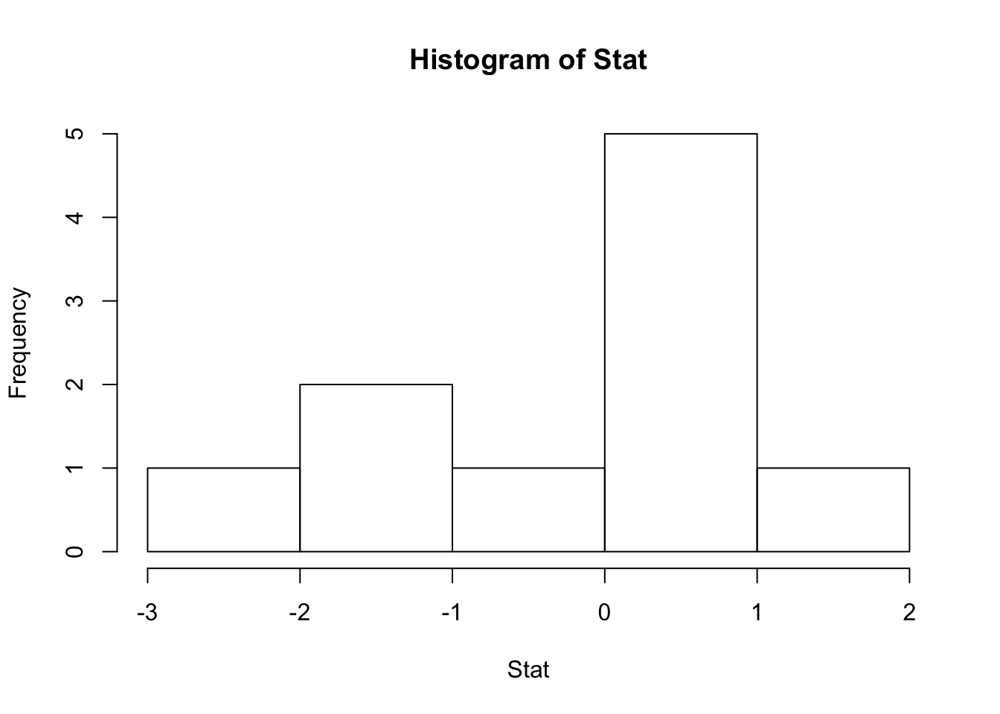
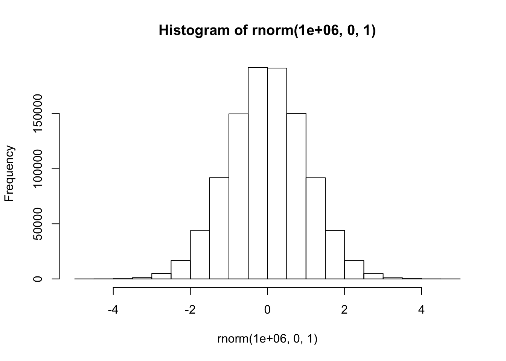
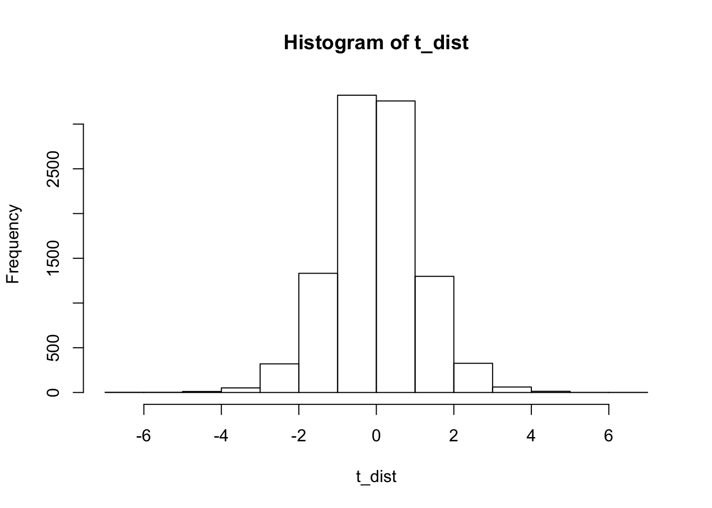

Stat<-rnorm(10,0,1)
hist(Stat)
# More normal
hist(rnorm(1000000,0,1))
#Replicate
replicate(100,rnorm(10,0,1))## [,1] [,2] [,3] [,4] [,5]
## [1,] -2.53830170 -1.15478776 -0.24732124 -0.12605879 -1.06122677
## [2,] -0.04571021 -0.53094461 -0.83225235 -1.18685297 -0.60885726
## [3,] -0.27487681 0.91026615 0.03555441 -0.04115588 -0.61234374
## [4,] -1.22975241 0.01754321 1.19756778 -0.75565852 -0.07057834
## [5,] 0.23952949 -1.35987682 -1.24114164 0.18479614 0.44965541
## [6,] -0.15828282 1.98055496 1.80396717 -0.88962096 0.45557855
## [7,] 0.39347917 -0.84332144 -0.50761577 -0.85150663 0.02885068
## [8,] 0.30059722 0.15489379 1.19960775 -0.11024969 1.14158467
## [9,] -0.28794046 -0.17238133 0.56084646 0.14538558 1.12379616
## [10,] -0.92162068 0.81991087 -0.54783876 -0.65953697 -2.20786635
## [,6] [,7] [,8] [,9] [,10] [,11]
## [1,] 2.5076888 0.40672133 0.8186273 -1.1233110 -0.03906174 0.0199427
## [2,] 0.9220093 -0.09970929 0.8877346 -1.2046755 -1.31933837 -0.3838462
## [3,] -0.6637063 1.03223108 -0.4311909 -1.6518213 0.35663071 -0.9365682
## [4,] 0.6498596 -0.20115667 0.2377170 0.9343294 -0.61740397 1.1952219
## [5,] -0.4141811 -0.70522951 0.1355369 -1.0294747 -2.43150729 -1.4519795
## [6,] -1.1729685 0.29227271 1.8853989 -0.5367100 0.59713728 -2.1273755
## [7,] -0.8874122 0.73866062 -0.5773711 0.3186417 1.26540760 0.6056431
## [8,] -0.1324967 -0.96221487 -1.5409288 1.7923895 0.49489127 0.7299839
## [9,] -1.3040813 0.12039187 2.0160053 0.4096550 0.74470673 0.5641587
## [10,] -1.4085487 -2.29930420 0.6896659 0.4517970 1.22061841 0.8924874
## [,12] [,13] [,14] [,15] [,16] [,17]
## [1,] -0.2641209 1.2899946 0.5862466 0.1735392 0.4229965 0.825572721
## [2,] 1.3327488 0.5197591 0.5074121 0.8730007 0.1933947 -0.196136273
## [3,] 1.5181146 0.8405065 -1.4898995 0.3022299 -0.6752299 1.129093464
## [4,] 1.9766382 -0.3898419 -0.1472173 -0.1042770 -0.3723511 0.172351617
## [5,] 1.5701699 0.5271070 0.2233861 -0.1748675 -0.7457281 0.728371989
## [6,] -0.8805802 -0.1794905 -1.8803241 0.1369330 -1.1157984 -2.145986775
## [7,] 0.1363460 0.3657276 1.9951562 0.7226198 0.3734956 -0.008869672
## [8,] 1.8501741 0.3486162 -0.7214372 1.1227844 0.0409489 1.294779619
## [9,] -0.9069490 0.6359755 1.4493535 -0.6333281 1.7678174 0.515707811
## [10,] -0.6549741 0.7515038 1.1092374 0.2833368 -1.6637744 -1.101722691
## [,18] [,19] [,20] [,21] [,22]
## [1,] -0.03641957 -0.9329133 -2.72622718 -1.07534012 -0.3378030
## [2,] 0.38755551 1.2611576 1.64913365 0.14311218 0.5643212
## [3,] -2.30932791 -0.2148574 -0.84668886 0.04087799 -0.5516657
## [4,] -0.28961543 0.7799311 1.86992232 -0.75015192 2.6122362
## [5,] -0.57868128 0.5773434 -0.58927889 -1.15995461 0.3300371
## [6,] -0.37240158 0.4889132 1.54326025 0.64404993 -0.6101864
## [7,] 1.22646171 -1.1380139 0.37556694 1.81656711 0.9767094
## [8,] 0.09062213 -0.9043235 -0.11136230 -0.63300763 0.5700961
## [9,] -0.77939087 0.1746742 1.38933554 0.06468868 1.5869319
## [10,] -1.36459063 1.2692716 -0.05213953 -0.58368817 0.9176522
## [,23] [,24] [,25] [,26] [,27] [,28]
## [1,] -0.06026983 -2.0569696 0.4863032 2.3514683 -0.23121069 1.95489279
## [2,] -0.39872787 0.6075036 -0.8232494 -0.9802551 -0.68952075 2.01021211
## [3,] -0.78050400 1.4409334 0.5362776 -0.2096616 -0.03275843 0.53340669
## [4,] -1.37049920 1.6823035 0.4496713 1.1883245 -0.20791082 -0.39993014
## [5,] -0.45458951 -0.7191941 0.6451522 -1.2107194 0.38263070 0.81794952
## [6,] 0.51081284 -0.5014405 -1.7346937 -2.5503070 0.35254419 0.17761277
## [7,] -1.23274455 -1.3756039 -1.2278485 -1.2385013 -0.15753443 -0.30945995
## [8,] -1.80731383 0.3071994 -0.3563689 -0.3097281 -0.08118728 -0.02882411
## [9,] -0.76850943 -0.3280779 -0.1973764 -1.5932222 0.39849066 -0.15483278
## [10,] -1.01765171 0.7194818 0.3757673 1.4455619 0.03529496 -0.02182825
## [,29] [,30] [,31] [,32] [,33]
## [1,] -0.36422349 0.49756531 -0.14649882 -0.42554165 2.02567905
## [2,] 0.18727950 0.44975737 -1.30845997 -0.09923209 -1.36183804
## [3,] 0.08479602 -0.80193164 -0.62781068 0.24481923 0.69247078
## [4,] -0.28109753 0.09931309 2.61143217 1.71884616 0.46886393
## [5,] 0.10000430 -0.56219908 1.61012041 -0.05280772 0.36694685
## [6,] -1.42111078 -0.16108409 -0.54940613 -0.98247275 0.08711376
## [7,] 0.47983733 0.41960965 -1.00522896 0.67300685 -0.76045444
## [8,] 0.54445934 -0.70992243 -0.57624525 -0.20630905 1.06457866
## [9,] -0.66732971 0.47457724 0.07894986 0.65467127 -0.90523023
## [10,] -0.26858001 -1.59404631 -0.31907078 -0.91982280 0.44291417
## [,34] [,35] [,36] [,37] [,38] [,39]
## [1,] -0.5619488 -1.04646438 2.00990452 1.0552481 -0.96749029 0.1268888
## [2,] 0.9182227 1.62449314 0.14176851 -0.3911043 -0.10699580 -0.2524041
## [3,] 1.4574643 0.67294758 1.30196964 1.1092299 -0.96139672 -1.9117476
## [4,] -0.1268502 -0.51627785 -1.12637594 1.1771397 -0.77492675 -0.8461683
## [5,] -1.2884303 1.65213813 -1.24824975 -0.5381657 1.59203625 -3.2685636
## [6,] -1.0452463 -0.02713762 0.10659116 -1.8768501 -0.24088779 -0.5571270
## [7,] 0.5363039 0.08793095 -0.09360802 0.6477738 -0.03477089 1.6311640
## [8,] 0.0817920 -0.87635469 0.77419682 0.6783484 -2.16794086 0.9170336
## [9,] -0.8276265 0.69986785 0.79428545 -0.3399968 0.38855385 1.0525308
## [10,] -0.3116108 1.26603829 0.92931247 -1.1190883 -0.57106708 -0.1460686
## [,40] [,41] [,42] [,43] [,44] [,45]
## [1,] -1.3966171 0.5129273 -1.210087411 0.7362221 0.2604615 -0.51233142
## [2,] -1.0567300 -1.4519253 0.277923349 -0.2831545 0.6951557 -0.47223329
## [3,] -0.2940659 0.6966456 0.107419386 1.2606150 0.1570929 0.79058342
## [4,] -0.8545946 1.2131549 -0.297119338 -0.1158961 -2.3215207 -0.11044974
## [5,] 0.1419441 0.7614900 1.128566976 -1.0096833 -0.3665466 -0.45938742
## [6,] -0.7283011 -2.0355471 0.008522222 -0.2452342 1.7539530 0.37473141
## [7,] 1.0134353 0.5138961 0.341105969 0.5654290 0.2349625 -0.46015069
## [8,] 1.5271866 -1.6940990 1.337215720 -0.3969759 -1.0416351 0.63399917
## [9,] -0.1855478 -0.3112285 -0.918033455 -0.2353582 1.4781086 -0.01790627
## [10,] -1.4762339 -0.3896008 -1.622458070 -0.4020420 1.2050439 0.35764246
## [,46] [,47] [,48] [,49] [,50] [,51]
## [1,] 0.4866684 -1.03497447 0.9806704 -3.0677134 -1.5848486 1.35559358
## [2,] -1.0980047 -0.04820241 1.0029114 -0.7891763 1.0863596 -0.73696936
## [3,] 0.0970311 -0.58761826 -0.5755400 -1.5517036 2.0564470 1.08306196
## [4,] -0.1630291 -0.17795600 0.6951223 1.2013675 1.1376945 -0.65697067
## [5,] 0.5150021 1.00265883 0.9615352 1.3767608 0.1077564 1.68883136
## [6,] -1.3565160 -0.19152748 0.4890507 1.6312824 1.6804257 0.15188929
## [7,] 1.8759507 0.27312230 -0.7818436 -0.7167075 -0.7932184 -0.05947260
## [8,] -1.5617686 -0.40786503 -0.4248250 1.5210955 -0.2889096 -0.01212505
## [9,] 1.0129995 1.02598062 -1.4172774 -0.3225144 2.3389331 0.91536527
## [10,] -0.3709197 -1.57027966 -1.3532179 -0.4377823 0.6612115 -1.52949198
## [,52] [,53] [,54] [,55] [,56] [,57]
## [1,] -2.1607547 -1.61951882 -0.20820702 -0.3755298 -1.0694880 -0.43150409
## [2,] -1.3057174 0.06087706 0.49324887 0.4039557 -1.0046948 -0.01988597
## [3,] -0.9471290 -0.85280381 -0.49322398 -1.0654519 0.5080821 1.03970573
## [4,] 0.3122436 -0.61684344 1.00302303 0.5929940 -0.8960133 -0.16302843
## [5,] -0.6819564 1.11504932 -0.39135492 -0.1661859 0.4682463 0.74719902
## [6,] 0.2116585 0.40486639 -1.47125891 0.6206718 -2.2132604 -1.39452434
## [7,] 0.1934501 -1.68663361 -1.90538888 2.8829556 0.4571019 -0.07532014
## [8,] -1.1416110 0.65119315 1.68770173 -1.3417764 -0.6077312 -0.75208674
## [9,] -0.4536320 -1.15576878 1.38888035 1.3672477 1.0138517 -0.39200893
## [10,] -0.5272806 0.43841283 0.09126206 -1.5204172 -1.2347810 -1.13305538
## [,58] [,59] [,60] [,61] [,62]
## [1,] -0.27999898 -0.3387311 1.64011197 0.6377737 -1.94077104
## [2,] 1.00775678 -0.4756611 -0.15142772 -0.4204060 1.04073358
## [3,] -0.04513851 -0.3657840 0.06391527 0.5437325 -1.27196167
## [4,] 1.04937777 -0.5978742 0.67926915 -0.3908474 -1.00662407
## [5,] 0.44803887 -1.3579493 1.25257305 0.2657073 0.54166042
## [6,] 0.03687033 -0.1793630 0.76427308 1.8317037 0.32583337
## [7,] 0.57868266 0.1369413 -0.40755004 2.6947312 0.26155454
## [8,] -1.12345719 -1.2849899 1.27695467 0.6866927 -0.09383692
## [9,] 1.05958068 1.0978888 1.08579429 -0.7503418 -0.28722669
## [10,] -0.81032291 1.1652062 -0.33044365 -1.1730390 -1.10432150
## [,63] [,64] [,65] [,66] [,67]
## [1,] -1.14516018 0.3718874 -0.05718541 0.16479563 0.7748807
## [2,] -0.50969116 0.4734341 0.52726388 -0.21732400 -1.0483087
## [3,] 0.80323274 1.6819226 0.83431827 -0.30482448 0.5403046
## [4,] 0.20094987 -0.5799325 1.30811592 0.84851579 0.8858887
## [5,] 1.68628396 -1.4349801 2.71102693 -0.71674637 0.1691586
## [6,] -0.10126513 -0.4362195 0.35338771 -1.16491316 1.0889104
## [7,] -0.75403089 0.6154263 -1.29568609 0.38305344 -0.1584651
## [8,] 0.02357984 1.8490797 1.44749413 -0.62670881 -0.2720681
## [9,] 0.62527301 0.7734590 -2.10564839 -1.12527607 -1.2454581
## [10,] 0.58958688 -0.3560534 2.22277473 0.01786352 -0.5768906
## [,68] [,69] [,70] [,71] [,72] [,73]
## [1,] -3.40799500 0.52093504 0.2763867 0.1283261 0.8507282 0.25416981
## [2,] 2.39128584 0.65803012 0.2785711 0.2522594 0.1300956 -0.70885646
## [3,] -1.13559606 0.90958983 1.0502912 0.3579392 0.8212698 0.44502318
## [4,] -1.22839220 1.51634450 1.0313786 -1.2282472 -0.1728781 -0.04974942
## [5,] 0.81402376 0.36932467 -0.8155085 0.6750890 1.5326821 1.35880390
## [6,] 0.28792867 0.95437917 -1.4581355 -0.5086849 -0.2166342 2.00376989
## [7,] 1.10505199 0.31140122 0.4200410 1.6810488 -0.4301888 -0.89312929
## [8,] 0.05472455 -1.48260612 1.1077384 0.3274275 -0.3882768 -0.13487789
## [9,] 0.89182044 -1.17222130 -2.5158685 -1.7620315 1.6281838 1.87942773
## [10,] 0.79461709 0.03216907 0.1487999 -0.5714047 1.7039107 -0.48663571
## [,74] [,75] [,76] [,77] [,78]
## [1,] 1.3476876 0.1272740159 -1.18336735 0.9625758 -1.3506118
## [2,] -0.7699200 -0.5031965617 1.39848685 0.3332368 0.7026046
## [3,] -1.0048022 -2.1422007024 0.19382658 -0.4848252 -1.4113056
## [4,] 0.1885304 -0.2948387051 -0.46474341 -0.3957333 0.3175224
## [5,] -0.3526920 -0.0004980507 0.15362659 -0.3540936 1.0670996
## [6,] -0.4478648 0.5986793278 -0.17525114 -0.1683125 0.3475816
## [7,] 0.1732287 -0.2904520672 0.29891253 0.3320220 -1.3753701
## [8,] -2.6285134 -2.1545467457 0.07099093 -0.7812064 -1.2574716
## [9,] 0.6915749 0.8213349418 1.34714126 0.6893378 1.2015232
## [10,] -0.2978806 0.2591836495 -2.58478888 -1.4890341 -1.2332030
## [,79] [,80] [,81] [,82] [,83]
## [1,] -0.61604982 -0.36684252 -1.10985053 -1.1233803 -0.77565154
## [2,] -0.05801305 -0.81739637 -0.98629697 -0.2390354 -1.71817710
## [3,] -0.43333460 -2.71642430 -0.62450245 2.1142591 -1.35982956
## [4,] -0.22094707 0.12948478 -1.09068272 0.2992953 2.67727074
## [5,] -1.72730448 1.66555994 0.53499294 0.7885290 -2.50269286
## [6,] -1.11226750 -0.59789063 0.30376969 -0.4168095 0.87060314
## [7,] 0.64624837 0.03898222 0.61326091 0.1855512 -0.43225673
## [8,] 1.33555007 -0.69009184 -0.06989562 -0.4687064 -0.08421372
## [9,] -0.63299661 0.44250087 0.71526879 0.2582359 0.30202700
## [10,] -0.43931853 -0.40150178 1.01434965 -0.5472164 1.83951218
## [,84] [,85] [,86] [,87] [,88]
## [1,] 0.71028285 -1.73246185 0.3241225 1.2955912 0.955925199
## [2,] -1.11266328 0.54516544 -0.5329565 1.0933555 0.006311389
## [3,] 1.35631854 -1.17119740 0.2589285 -0.5866837 -0.115286776
## [4,] 1.08122670 -0.06042751 -1.4341155 -0.9053579 -0.824365612
## [5,] 2.11606163 -0.07116129 -0.7114070 -0.7223661 0.652341853
## [6,] -0.69016058 0.15916025 -0.5561728 -0.9851591 -0.916434265
## [7,] 1.50081226 0.49134098 0.3500276 0.1848134 -0.577862709
## [8,] -0.00254429 -1.19032652 0.1432069 0.1789224 0.111536612
## [9,] 0.28222924 -1.45260498 1.6861078 -0.3206470 -0.773205374
## [10,] 0.40032365 -1.05243000 0.5212059 -0.4896432 0.540046555
## [,89] [,90] [,91] [,92] [,93]
## [1,] 0.3471657 -1.4448276 1.18828783 -0.7394004 -0.566344893
## [2,] 0.6826129 0.1787491 0.69508256 0.4623361 0.290182808
## [3,] -0.3194904 -0.3599383 -0.54256937 0.4651268 0.710473248
## [4,] 0.9658507 -0.6185595 -0.62514646 -0.6795735 1.169928387
## [5,] -0.6540129 -0.7902655 -0.80042804 -2.3397205 0.021078409
## [6,] 0.4787452 0.5354563 0.34934690 1.5275972 0.330265839
## [7,] -0.7507277 -0.1575551 -0.01693072 -0.7668733 0.186458870
## [8,] -2.6016357 -0.1405378 0.45012298 0.3474953 1.087037229
## [9,] -1.3264295 -1.5133011 1.12021240 -1.2010982 0.007897783
## [10,] -0.6903502 1.3368913 1.84224987 2.2139751 0.939129348
## [,94] [,95] [,96] [,97] [,98]
## [1,] 0.81610157 -1.19989125 -0.4616374 -1.034287135 -0.5805582
## [2,] 1.19724200 -0.44132117 -2.9861976 -1.738816173 2.3935020
## [3,] 0.39448253 -0.82966690 0.2616898 0.468113312 -0.7108638
## [4,] -0.45845713 -0.47570042 -0.9688486 -1.022150002 -1.2093047
## [5,] 0.05408865 -0.07288143 -1.5561206 1.438071083 1.0092197
## [6,] 0.33470457 1.45450770 -0.3916894 0.004414842 0.1326089
## [7,] -1.83891066 -0.28188696 -1.7174424 -2.002084021 -0.1064908
## [8,] 0.14795175 -0.09904468 2.1893761 0.430509568 2.5224776
## [9,] 2.28302656 0.23362176 0.6031352 1.847194544 -0.7532899
## [10,] 0.26020714 0.70966180 0.6282467 0.965760742 1.2167073
## [,99] [,100]
## [1,] 1.00519644 0.4033682
## [2,] 1.99726917 1.4939336
## [3,] -0.66938186 -0.1381899
## [4,] -0.75203448 0.4998054
## [5,] -1.15660720 -1.8007090
## [6,] -0.30940459 1.0238634
## [7,] 0.01525471 -0.7251625
## [8,] 0.31592547 -1.2427917
## [9,] 0.23246529 -1.0038586
## [10,] 0.53631389 -0.2034019#get sample mean
mean(Stat)## [1] -0.2143763#Use a for loop
savemeans<-c()
for(i in 1:1000){
savemeans[i]<-mean(rnorm(10,0,1))
}
null <- replicate(10000,mean(rnorm(10,0,1)-mean(rnorm(10,0,1)))) Crit_val<- sort(null)
Crit_val[9500]## [1] 0.7388024#nondirectional
Absolute_cv <- sort(abs(null))
Absolute_cv[9500]## [1] 0.8722361Show that the properties of a simulated t-distribution are the same as the properties of the analytic t-distribution. Assume df = 9.
For example, what are the probabilities of t(9) >= .5, 1, 1.5, 2, and 2.5? These p-values can be obtained using the qt() function.
Create a simulated t-distribution for the null hypothesis with df=9. Here, the model situation involves taking samples of size n=10 from a normal distribution. The t-value is computed for each sample (sample mean - 0)/SEM. The process is repeated 10,000 times, and each t-value is saved. The resulting 10,000 t-values are the simulated t-distribution.
Using the simulated t-distribution, find the probability of t(9) >= .5, 1, 1.5, 2, and 2.5
Compare the two sets of probabilities to show that the difference is small. What happens to the difference if the simulation is repeated fewer times (e.g., 100) vs. more times (e.g., 100,000)
t_dist <- replicate(10000,t.test(rnorm(10,0,1))$statistic)
hist(t_dist)
length(t_dist[t_dist<.5])/10000## [1] 0.6882length(t_dist[t_dist<1])/10000## [1] 0.83length(t_dist[t_dist<1.5])/10000## [1] 0.9142length(t_dist[t_dist<2])/10000## [1] 0.9598length(t_dist[t_dist<2.5])/10000## [1] 0.9818#With a loop
ts <- c(.5,1,1.5,2,2.5)
sim_t <- c()
for(i in ts){
sim_t <- c(sim_t,length(t_dist[t_dist >= i])/10000)
}
sim_t-(1-pt(ts,9))## [1] -0.002735650 -0.001718198 0.001874672 0.001923588 0.001269086null <- replicate(10000,cor(rnorm(10,0,1),rnorm(10,0,1)))
sorted_null <- sort(abs(null))
sorted_null[9500]## [1] 0.6469677null <- replicate(10000,cor(rnorm(100,0,1),rnorm(100,0,1)))
sorted_null <- sort(abs(null))
sorted_null[9500]## [1] 0.1966584